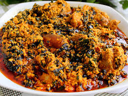

Egunsi Soup

A Bowl containing Egunsi soup
Description
Egunsi Soup is an indigenous soup that originated
from Southwestern geographical region of Nigeria.
This delicacy can be generally devoured with
Swallow like Eba, Iyan, Amala,
Fufu, Lafu, Pupuru or any carbs of your choice.
Recipe information
- Preparation time: 20minutes
- Cooking time: 45 minutes
- Difficulty level: intermediate
- Number of servings: 1 litre per family of four
Ingredients
- Egunsi seeds (White melon seeds): 200g
- Ugu leaves (Fluted pumpkin leaves): 200g
- Beef, chevon or Chicken: 4kg
- Pinch of salt to taste
- Groundnut oil and palm oil: 200ml
- Onions: 200g
- Scotch bonnet peppers:100g
- tomatoes: 100g
- sun dried shrimps and prawns: 1/2 cup
- Water of required volume: 2 cups
- Dried and de-oiled red herrings, dried catfish: 500g each
- Locust beans: 1/2 cup
Instructions
- Place the Egunsi seeds, sun-dried shrimps and prawn in a blender;
until the mixture is powdery.
- cut the beef, chevon or chicken, dried red herrings
and dried catfish into desired sizes and cook with little water
for about 20 to 30 minutes.
- Heat the Groundnut oil with little mixture of palm oil in a
large pot over medium heat; make a sticky batter of egunsi by adding
little water to it and fry in the heated mixture of groundnut and palm oil;
stir the content until a light brown granular pudding is formed and
sprinkle the content with locust beans under low heat of a minute; turn
of the heat.
- Place tomatoes, onions and peppers in a blender, blend until smooth,
stir the pepper mixture with the fried granular egunsi seeds sprinked
with locust beans; reduce heat to medium low and cover for about 30 minutes;
then add the beef chevon or chicken, add salt to taste and allow to simmer for 10 minutes
- Add in chopped Ugu leaves and stir well. continue simmering for 15 more minutes
- Turn off the heat; voila! your egunsi soup is ready
and can be served with any swallow of your choice
Additional Information
Egunsi Soup should be warmed on low heat
For information about Egunsi Soup preparation